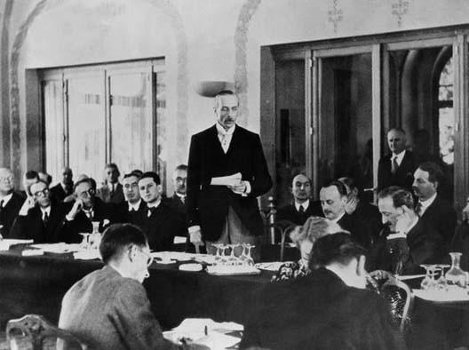
À partir du début de l'année 1938, l'émigration juive connaît un essor considérable, mais les autorités entravent ces efforts et continuent à procéder à la spoliation systématique des biens – un processus connu sous le nom « d'aryanisation ». Au total, sur le demi-million de Juifs vivant en Allemagne lorsqu'Hitler accède au pouvoir, près de 300 000 Juifs parviendront à émigrer avant la mise en place de la « Solution finale de la question juive ». Vers la fin des années trente, des organismes juifs internationaux, des associations juives allemandes et le mouvement sioniste jouent un rôle majeur dans la promotion de l'émigration. Après la Nuit de cristal, on assiste à une nette augmentation de l'émigration juive depuis l'Allemagne, l'Autriche et les zones tchèques de Tchécoslovaquie, qui ont été annexées à l'Allemagne entre 1938 et début 1939. Néanmoins, les restrictions de plus en plus strictes imposées par les différents pays d'accueil concernant l'accueil de réfugiés juifs empêchent un plus grand nombre de Juifs de quitter l'Allemagne ou les pays se trouvant sous son contrôle.
Les pressions de plus en plus fortes exercées sur l'administration américaine au sujet de sa politique d'immigration conduisent le président Franklin Roosevelt à convoquer une conférence internationale à Evian, une ville thermale française située sur les rives du lac Léman. Les représentants de trente-deux pays participent à la conférence, qui se tient en juillet 1938. Tous manifestent un soutien de façade à la cause des réfugiés et expriment leur compassion mais déclarent à tour de rôle que leurs pays ne peuvent accepter davantage d'immigrants. T.W. White, le délégué australien présent à la conférence, déclare que « dans les circonstances actuelles, l'Australie ne peut faire plus… Attendu qu'il n'existe pas de véritable problème racial chez nous, nous ne souhaitons pas en importer un ». Le gouvernement britannique limite de manière drastique l'immigration et l'établissement de réfugiés juifs en Palestine. Les Juifs, désespérés, tentent alors d'atteindre n'importe quelle destination possible et des milliers de Juifs émigrent alors à Shanghai, en Chine, alors que les portes de la plupart des pays se ferment devant eux.
22 Tammuz 5778 - 5 juillet 2018
La Conférence d’Evian de 1938 fut organisée à l’initiative du président des États-Unis d’Amérique, Franklin D. Roosevelt et elle se déroula du 6 au 15 juillet 1938 essentiellement à l’hôtel Royal d’Evian. Son but était de venir en aide aux réfugiés allemands et autrichiens fuyant le nazisme, peu après l’Anschluss. Cette conférence permit entre autres, la création du Comité intergouvernemental pour les réfugiés (CIR). 80 années plus tard, le douloureux problème des réfugiés demeure toujours d’actualité comme on a pu le voir au cours des derniers jours…
C’est bien connu: Evian est une station thermale réputée, pour son eau minérale, probablement l’une des meilleures au monde, et elle est située sur les splendides bordures du Lac Léman.
Rien dans le caractère très paisible de cette petite ville touristique ne rappelle pourtant l’événement dramatique et majeur dont elle a été le théâtre, en juillet 1938, il y a très exactement 80 ans.
Mais pour mieux le comprendre un rappel historique s’impose:
1938 est une année déterminante pour les Juifs d’Europe. A la suite des lois de Nuremberg, plus de la moitié des 500 000 juifs allemands quittent leur pays et tentent de trouver refuge au sein des autres nations européennes. Devant le refus de ses pays d’accueillir les Juifs, le président américain, Franklin Roosevelt convoque, sur les conseils de son Secrétaire d’Etat Cordell Hull, une conférence exceptionnelle afin de statuer du sort des réfugiés Juifs. Roosevelt aspire à un partage équitable des réfugiés juifs dans le monde et surtout il veut éviter que trop de Juifs ne demandent l’asile aux États-Unis…
Ne faisant pas partie de la Société des Nations (SDN), les États-Unis se chargent d’organiser la conférence qui est prévue de se dérouler à huis-clos, la presse ne devant être informée de son déroulement que par la voie de communiqués officiels. La Suisse, pays où réside le siège de la SDN, ne voulant pas recevoir la conférence, c’est la France qui héberge la conférence dans la ville d’Evian, avec à la tête de sa délégation officielle le sénateur Henry Bérenger.
Cordell Hull souligne qu’aucun des pays participants à la conférence ne sera dans l’obligation de recevoir les réfugiés. Partant de là, trente-trois pays seront invités. L’Italie de Benito Mussolini refuse de venir, par solidarité avec Hitler. L’URSS décline de même l’invitation. La Hongrie, la Pologne, la Roumanie et l’Afrique du Sud n’envoient que des observateurs. Ni l’Allemagne, ni le Portugal de Salazar ne sont invités, Washington jugeant que vu leurs politiques, ils ne seraient d’aucune aide (à l’époque, les nazis envisagent encore la « solution au problème juif » en tant qu’expulsion massive et relocalisation des communautés juives hors du Reich, avec par exemple la mise au point du plan Madagascar). Le Royaume-Uni accepte l’invitation, en s’assurant préalablement que Washington n’exigerait de leur part aucune augmentation des quotas d’immigration.
Le 6 juillet 1938, s’ouvre à Evian ce que les journaux de l’époque appellent « la conférence des Juifs » et ce même si à l’époque certains délégués évitent soigneusement de mettre en exergue le fait que ces réfugiés soient juifs. Elle se tient dans un palace local qui domine le Lac Léman, l’hôtel Royal.
La Suisse indique qu’elle ne peut plus accueillir de réfugiés autrichiens et a même rétabli le système de visa avec ce pays. Le représentant australien indique que son pays ne souhaite pas « importer un problème racial ».
Seul le représentant de la République dominicaine et frère du dictateur Trujillo propose d’accueillir 10 000 réfugiés juifs contre subventions. Mais cette proposition, intervenant quelques mois après le massacre de milliers d’Haïtiens, n’aura pas de suite.
Des organisations non gouvernementales, en majorité juives, s’invitent à la conférence mais ne pourront assister qu’aux séances publiques. Elles seront entendues lors d’une sous-commission pour expliquer leur point de vue. Les délégations américaine, britannique et française se mettent d’accord pour une résolution finale qui sera approuvée par l’unanimité des autres délégations.
Seule la création du Comité intergouvernemental pour les réfugiés (CIR), aussi appelé le Comité d’Evian, sera décidée. Aucune véritable solution ne sera trouvée concernant l’hébergement des réfugiés juifs.
Au cours des jours qui vont suivre la presse allemande sera triomphante. Le lendemain de la conférence elle titre: « Juifs à vendre; même à bas prix, personne n’en veut! ». Hitler, dans les jours qui suivent, ne se prive pas de se moquer de cet échec: « C’était honteux, dira-t-il, de voir les démocraties dégouliner de pitié pour le Peuple juif et rester de marbre quand il s’agit vraiment d’aider les Juifs! »
Les historiens s’accordent à dire que l’échec de la Conférence d’Evian a permis à Hitler de comprendre que la communauté internationale ne se préoccupait pas vraiment du sort des Juifs. Et d’une certaine manière elle a posé les jalons de la Solution Finale. Quatre mois plus tard, le 9 novembre, les Nazis déclenchent la Nuit de Cristal…
Hanokh Kopolovitch
Raphaël Delpard
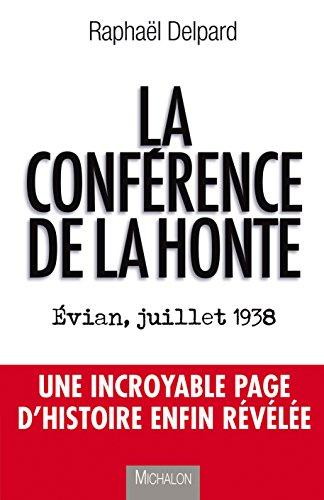
Il arrive rarement qu’une formule que celle utilisée par Raphaël Delpard dans son livre « La Conférence de la honte, Évian, juillet 1938 – Une incroyable page d’histoire enfin révélée » (Éd. Michalon, 2015) ait la vocation de sonner si grave et si juste, surtout à la lumière de l’actualité inquiétante que nous vivons.
En abordant le sujet des crimes perpétrés par le régime nazi et de l’attitude du monde occidental face à ce drame, l’auteur conclut: « Car si le crime nazi envers les Juifs et les Tziganes est imprescriptible, ce qui l’a rendu possible, c’est bien le silence des nations ».
Sans doute, cette affirmation doit être resituée dans le contexte des années ‘30 pour dire toute la gravité d’une situation dont on connait aujourd’hui le bilan désastreux. Sauf que, même sortie de ce contexte, sa réalité et son fardeau symbolique lui confèrent un statut indéniable de paradigme dont l’Histoire s’en empare pour expliquer comment se nourrit son infernale machine à fabriquer de la mort et de la destruction. Cette tension symbolique entre factualité et responsabilité maintient notre conscience collective dans une continuelle interrogation sur les failles et surtout sur les écueils de notre capacité à jouer un rôle dans le devenir de l’humanité.
Le travail d’historien de Raphaël Delpard ne se résume pas à cette dénonciation des faits, même si celle-ci lui sert de fil conducteur dans sa réflexion. Se consacrer à un tel sujet exige pour lui un long travail de documentation sur les débuts du troisième Reich, sur la naissance et la progression de l’idéologie raciste et antisémite dont Hitler avait fait son crédo politique et son étendard belliqueux.
N’oublions pas de mentionner ici le souci pour la portée pédagogique que cet auteur accorde habituellement à son écriture. Plus encore, le sous-titre de son ouvrage ouvre une perspective supplémentaire sur sa contribution à la recherche de la vérité sur des faits méconnus ou cachés au grand public. Pourquoi tout ce mystère autour d’une des plus grandes hypocrisies des dirigeants politiques de l’époque? Comment expliquer leur attitude devant un drame d’une telle proportion qui concerne, dans les années 1938, des centaines de milliers de Juifs discriminés dans leur vie matérielle et sociale et contraints à quitter l’Allemagne nazie? La Conférence d’Évian-les-Bains (6- 15 juillet 1938) a donné à chaque délégué présent l’occasion de trouver les prétextes les plus odieux pour expliquer l’impossibilité d’accueillir une population en errance et menacée de destruction massive.
Raphaël Delpard a eu la gentillesse de répondre à toutes ces questions.
Pourquoi ce livre? Entre la nécessité du témoignage et le devoir de mémoire quelle a été l’impulsion la plus forte dans votre travail d’historien?
Mes premières réactions ont été la surprise et la colère de voir que cette page d’Histoire avait été occultée pendant toutes ces années, qu’aucun livre n’y avait été consacré. Derrière, c’est profilé un travail de mémoire et la nécessité de rapporter encore une fois comment le comportement des hommes peut être vecteur d’un drame terrible.
Beaucoup d’ouvrages ont été consacrés à la période sombre du début du nazisme. En quoi, selon vous, ce sujet garde encore toute sa force aujourd’hui?
Bien-sûr qu’il y beaucoup d’ouvrages, de livres, de films, concernant la montée du nazisme, la mise en place de la politique raciste, expansionniste, et cætera, mais, encore une fois, cette partie n’avait jamais été abordée puisqu’elle avait été occultée. Tout aussi comme d’autres sujets, comme, par exemple, celui de l’eugénisme, y compris en France, où il y a eu un ou deux trains de malades mentaux qui ont été déportés vers l’Allemagne pour être assassinés. Là aussi, il y a des responsabilités à éclaircir, est-ce que la SNCF était dans le coup, est-ce qu’elle savait qui étaient ces gens qui voyageaient dans les trains de sa compagnie. Enfin, ce que je veux dire c’est que dans cette période précédant septembre 1939, il y a encore des passages où l’Histoire n’est pas dite. En particulier, même s’il y a quelques livres qui ont été écrits là-dessus, l’attitude de la Société des Nations qui, je vous le rappelle et vous l’avez lu dans le livre Joseph Avenol qui était pro-allemand et assez anti-juif et qui non seulement a été un des artisans du refus d’organiser la conférence à la SDN, ayant pendant la guerre un comportement tout à fait regrettable. Bref, pour être plus précis, il y a toute une période de l’avant-guerre qui reste à découvrir et à travailler.
Vous consacrez une bonne partie de votre ouvrage à la description des circonstances historiques, géopolitiques et même biographiques qui ont contribué à la prise du pouvoir allemand par Hitler et les nazis. Pourquoi cette longue parenthèse?
Je crois que je l’ai mis d’abord parce que le livre n’aurait pas tenu debout, pour pouvoir expliquer comment les gens sont arrivés d’une part à ne plus tendre la main à des gens qui étaient indiscutablement en péril, même si à l’époque l’on ignorait totalement le programme et l’aboutissement de la solution finale qui a été dessinée en décembre 1941 et mise en place en janvier 1942. Il fallait donc expliquer l’attitude des uns et des autres sans quoi le message, si je puis dire, ne tenait pas debout.
Entre l’ascension fulgurante du régime nazi et l’indifférence coupable des États face à cette évidence sous prétexte de non-ingérence dans les affaires d’un État souverain et sous l’œil indifférent de la Société des Nations comment expliquer cette attitude?
Pour pouvoir répondre à cette question d’une manière pertinente, il faudrait presque expliquer l’attitude politique, géopolitique, économique de chaque État qui était représenté à la SDN et pouvoir expliquer ainsi les raisons de ce refus. Il y une raison globale qui est initiée par Roosevelt qui fait comprendre à travers ses ambassadeurs aux États qui ont été convoqués à la conférence que rien ne sera fait, que les frontières resteront fermées. Autrement dit, pour pouvoir répondre à votre question, il faudrait presque une seconde analyse, en regardant un pays après l’autre. C’est une longue explication, un long débat que je n’ai pas entre les mains, pour cela il faudrait replonger dans les archives. Par exemple, je développe dans mon livre la situation de la Suisse où Paul Grüninger qui a fabriqué de faux passeports, de faux visas pour que les Juifs autrichiens puissent, après l’Anschluss, entrer en Suisse. Malgré cela, il a fini par être rejeté par son propre pays.
Surprenante est aussi la manière dont l’esprit collectif allemand glisse imperceptiblement vers la haine des Juifs, pourtant très bien intégrés dans la société. Comment décrire ce glissement généralisé vers une mentalité de haine?
Disons que lorsqu’une population se détourne d’une partie de ce qui la compose, c’est que l’information a réussi à les séparer de cette partie. Disons que, en fait, la grande force de la manipulation des foules du nazisme, mais on pourrait faire un parallèle avec la manipulation de foules de nos jours, c’est de rendre le Juif invisible. Souvent, lors de mes conférences, les gens me posent des questions, non pas relatives à ce livre, mais à la Seconde guerre, sur l’horreur de voir un soldat, un être normalement constitué, comme on dit, tuer froidement un Juif, homme ou femme et même un enfant. Mais j’ai toujours expliqué qu’Hitler avait réussi à inculquer aux soldats de la Wehrmacht, des SA, etc. l’idée que lorsqu’ils tiraient sur un Juif, ils tiraient dans le vide, ils ne tiraient sur personne. C’est ça qu’il faut comprendre!
Et ce qui est stupéfiant c’est que ces Juifs étaient complètement intégrés dans la société allemande, intégrés à un point que l’on ne peut même pas imaginer, ça dépasse les mots, ça dépasse l’entendement quelque part. Eh bien, une partie de la société allemande aussi s’est préservée elle-même: il ne faut pas oublier que dans les guerres il y a 10 ou 15%, 20 % maximum de gens qui veulent résister, les autres veulent survivre.
Donc il faut aussi voir la situation de l’Allemagne à cette époque et la force de la propagande nazie qui réussit à cette époque de rendre le Juif responsable, comment dire, maître du malheur. Bref, pour être plus précis, il faut retenir que la raison principale de ce glissement vers la haine a été la réussite de la propagande de rendre invisible une population totalement intégrée qui était allemande d’abord et juive ensuite.
Devant ce spectacle de violence et de désolation, les Juifs d’Allemagne agissent « sans précipitation, convaincus qu’il s’agit d’une effervescence de courte durée ». S’agit-il, selon vous, d’une sorte de scepticisme suicidaire ou d’une catalepsie devant la rapidité du cours des événements?
Oui, tout cela est lié à la question précédente, les Juifs allemands ne croient pas. Il faut vraiment attendre 1935. Je ne dis pas qu’il n’y a pas eu de familles qui ont essayé de s’en aller avant, bien sûr, mais véritablement, le grand moment du départ, la prise de possession du départ, la décision de s’en aller n’a commencé vraiment à entrer dans les esprits qu’à partir de 1935. Et puis, ceux qui mettent leurs biens entre les mains du Reich ne peuvent pas quitter l’Allemagne, les consulats ne délivrent pas de visas. Ils sont donc enfermés dans une nasse, dans un filet. On peut donc dire qu’à partir de 1935 naît une conscience du danger, et encore…
Moi, je possède des témoignages que je n’ai pas mis dans le livre, des Juifs allemands qui ont été à Dachau et qui me disaient qu’ils avaient honte pour les Allemands, mais ils s’intégraient dans cette honte-là. C’est quelque chose qui est très difficile à comprendre et il m’est arrivé lors d’une conférence au Musée de la Résistance à Lille, les gens m’ont fait répéter ces choses, tellement ça paraît incompréhensible. Mais, c’est, hélas, la vérité. Il ne faut pas l’oublier qu’en Allemagne il y a eu des ministres, des ambassadeurs juifs, ils étaient Allemands.
Et, puis il y a eu la rapidité de l’ascension d’Hitler au pouvoir. Hitler, les Allemands ne le connaissaient pas, il était connu en Bavière parce que c’était là où il exerçait ses talents. Et même dans les autres pays d’Europe, personne ne s’est inquiété de savoir qui il était. Et donc, la rapidité, la violence. Je raconte dans le livre comment Ribbentrop demande au président de la communauté juive de Berlin de se rendre à New York et de demander aux Juifs américains de continuer d’acheter des produits allemands, parce qu’il y avait un boycotte de ces produits. Il y a en effet un cercle d’effervescence, mais tout cela va se calmer. Il faut du temps. Les Juifs sont là depuis le premier siècle, il ne faut pas l’oublier; ils ont fait toutes les guerres comme Allemands, ils ont fait la guerre de ’14, ils sont médaillés et d’ailleurs l’empereur écrit à Hitler (je recopie les deux lettres dans mon livre) en parlant de la valeur et de la vaillance des soldats d’origine juive.
Donc, il y a la rapidité, la non-connaissance du personnage, n’oubliez pas que le principal moyen de communication c’est la radio, alors que nous savons que tout s’est fait dans les officines politiques. On sait bien de quelle manière son mouvement a gagné des sièges au parlement. Personne ne connaissait cet homme qui, après être devenu chancelier, détenait tous les pouvoirs! On a beau à se gausser aujourd’hui en parlant de Mein Kampf!
Qui a lu ce livre? Il était connu parce qu’il était acheté obligatoirement par les municipalités qui l’offraient tout aussi obligatoirement aux jeunes mariés. Ce qui explique pourquoi il s’est vendu à des millions d’exemplaires. Il y a donc cet amalgame, et puis les gens n’y croient pas! Lorsque les Allemands voient les boutiques juives fermées, ils ne comprennent pas. Il a fallu mettre un soldat SA devant chaque boutique pour s’apercevoir qu’il se passait quelque chose. L’interdiction, au début, leur passe au-dessus de la tête.
Commence ensuite un exode parsemé de terribles drames. Un de ces exemples qui conjugue désespoir d’une population déplacée et indifférence des gouvernements censés les accueillir est le périple du bateau Saint-Louis. Il a, même à nos jours, valeur de symbole.
Le Saint-Louis n’est hélas pas le seul exemple, mais je n’ai mis que celui-ci. Nous sommes, il ne faut pas l’oublier, en 1939, à la veille de la guerre. Ce qu’il faut savoir c’est que les ports étaient tous fermés. Le Saint-Louis est l’exemple immense, frappant du non-intérêt à la fois parce qu’il s’agit de Juifs et ensuite parce que l’on ne va pas se brouiller avec l’Allemagne. Il y a donc tout un aspect politique, culturel. La responsabilité de ce qui va se passer est mondiale, elle est planétaire, les exécuteurs nous les connaissons, mais ceux qui ont permis tout cela, c’est la terre entière.
Nous parlons ici de Saint-Louis, mais il ne faut pas oublier qu’en 1944 il y a des Juifs boat-people qui essaient de se sauver d’Italie en essayant de rejoindre Chypre par la mer et la marine anglaise a reçu l’ordre de bombarder ces flottilles de rescapés.
Arrive enfin le moment de la Conférence des nations de 1938, à Évian-les-Bains. Qui est à l’origine de cette conférence et pourquoi s’est-elle déroulée en France, alors que le siège de la SDN se trouvait à Genève? Vous parlez à ce sujet d’un vrai « engrenage des abandons ».
On peut dire qu’à l’origine de cette conférence se trouve Roosevelt qui est poussé aux épaules par l’Association juive mondiale et chrétienne anglaise à l’organisation de cette conférence même si les USA, comme d’ailleurs l’Allemagne et l’URSS, n’étaient pas membres de la SDN. En revanche, concernant le refus que cette conférence se déroule à Genève, je suis incapable de vous répondre, car il m’a été impossible de trouver le procès-verbal de la réunion à huis clos où une telle décision a été prise. J’ai été de service en service, de dossier en dossier sans trouver la transcription de cette décision.
Là encore il s’agit d’un document qui appartient à l’humanité, si je puis dire, qui appartient à tout le monde et que l’on camoufle. La même situation avec la France qui s’y est collée pour organiser cette conférence. Il n’y a pas de réponse à la question, j’ai longuement fouillé sans succès pour savoir si la France avait un quelconque intérêt, car, en fin de compte, ça aurait pu être l’Angleterre, la Belgique pas l’Italie, bien sûr ni l’Espagne. En tout cas je n’ai pas de réponse à cette question non plus. Quant à l’engrenage des abandons, il s’agit de tous les abandons, de 1938, de Munich, et l’on peut dire que 1938 c’est l’année de tous les abandons.
Quelle leçon retenir du bilan honteux de la conférence d’Évian?
La leçon à retenir c’est que nous sommes tous responsables des uns et des autres et que l’Histoire n’est pas vierge même si nous ne sommes pas encore en mars 1941 quand commence la déportation. Lors de mes conférences, on me parle de la migration en marche forcée des populations d’aujourd’hui en Europe. Je crois qu’il ne faut pas comparer ce qui n’est pas comparable: ces gens qui arrivent trouvent les portes de l’Europe grand ouvertes, ces portes ne sont pas fermées, il n’y a pas besoin de passeports, de visas alors que les Juifs allemands et autrichiens ne pouvaient entrer nulle part. C’est ça la grande différence. Alors oui, comme leçon, nous pouvons dire que ce qui arrive aux uns peut arriver aux autres et que personne n’est à l’abri.
Êtes-vous sceptique ou optimiste quant à l’évolution et à l’amélioration de la situation actuelle?
Moi qui suis d’un optimisme à tout crin, je suis d’un profond pessimisme par rapport à ce qui se passe actuellement dans le monde. Je suis écœuré, j’ai la nausée parce que tout ce qui a été bâti depuis des siècles par les uns et par les autres, même si l’on s’est battu les uns contre les autres, nous dirons que ça fait partie de la marche du monde, de l’évolution de l’humanité, de l’histoire des hommes – les hommes ont besoin de guerres, d’expansionnisme, ils ont besoin d’autorité –, mais ce qui se déroule actuellement sous nos yeux et qui va s’accentuer, va devenir terrible, car le pire est devant nous, et il va apporter des choses que nous n’avons encore jamais vues.
Je ne parle même pas de pénuries, car il va y avoir des pénuries. Ce qui est devant nous va être terrible. Mais ce qui est terrible c’est de penser que c’est finalement, je vais mesurer ce que je veux dire, on va dire quoi un clan, un groupe, un groupuscule de gens qui ont décidé de changer la face du monde, de redistribuer les cartes des puissances.
Lorsque vous regardez les guerres, la guerre de 1870, est la réponse des guerres royales et napoléoniennes de 1815, la guerre de ’14 est la réponse à celle de ’70, et celle de ’39-’45 c’est la réponse à la guerre de ’14 avec le redécoupage des territoires, les frustrations, les amertumes qui engendrent finalement les guerres et les conflits et on va créer la même chose.
La différence, la grande crainte, c’est qu’il y aura, comme toujours d’ailleurs, une minorité qui va résister devant une majorité qui sera prise de peur parce que, depuis 1945, elle vit dans un certain confort, et c’est normal, mais l’on n’a pas habitué les gens à se battre de nouveau. Les gens des pays de l’Est ont dû se battre, certes avec des erreurs et des errances, pour rebâtir l’image de ce qui leur avait été volé par les bolcheviks. Ici, ce n’est pas la même chose, ici les gens sont indolents, ils n’ont pas le goût du combat, voilà! Donc, ma grande crainte c’est que l’on va arriver, pour revenir au sujet de notre discussion, comme Hitler l’avait fait en son temps, à faire ressurgir des concepts que tout le monde avait acceptés par peur, tout simplement.
Je ne suis pas optimiste, je suis profondément pessimiste, profondément inquiet, triste, amer et, bien sûr, je pense à moi-même, « qu’est-ce tu as fait, dès le premier jour où tu as pu voter, tu as pu agir, qu’est-ce tu as fait? … Mais je ne vous donnerai pas la réponse, bien sûr…
Propos recueillis par Dan Burcea
Note sur Joseph Avenol:
Joseph Avenol, secrétaire général de 1933 à 1940 de la Société des Nations, inspecteur des Finances, haut-fonctionnaire, ne doit sa nomination à la SDN qu’au simple fait que, suite à l’accord intervenu entre les grandes puissances lors de la création de la Société des Nations, le Premier secrétaire devait être anglais et son successeur français. Avenol est un suiviste, exécutant les ordres que lui donnent les nations adhérentes et ne déroge pas aux directives des gouvernements anglais et français. Caricature du haut-fonctionnaire, exécuteur, privé d’imagination et d’initiative. De toute façon, le sort des Juifs en fuite ne l’intéresse pas. La suite de sa carrière explique son peu d’empressement à résoudre la crise des réfugiés. Lors de l’invasion Allemande en Pologne, il est favorable à une politique de collaboration avec Berlin.
Note sur Paul Grüninger:
Paul Grüninger paie un lourd tribut pour sa désobéissance aux ordres en permettant à trois mille Juifs d’entrer en Suisse et de fuir à jamais l’enfer nazi. Il fut jeté hors de la gendarmerie, et vécut de petits métiers pour survivre. Instituteur avant d’entrer dans la gendarmerie, il ne put retrouver un poste d’enseignant. Ce n’est qu’en 1995, soit vingt-trois après sa mort, qu’il fut réhabilité, grâce à l’intervention et à l’action incessante des enfants d’un couple autrichien auquel il avait apporté de l’aide et qu’il avait sauvé.
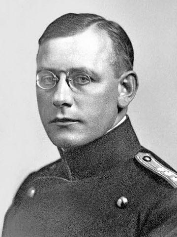
Elevé au rang de Juste parmi les nations (1971) et réhabilité (1995)
A la faveur de la crise économique de 1929, le NSDAP (parti national-socialiste des travailleurs allemands), prend de l’ampleur et progresse au fil des scrutins électoraux. Adolf Hitler à la tête du parti depuis 1921, tire parti des échecs de la République de Weimar et exploite le nationalisme engendré par le Traité de Versailles signé à l’issue de la Première Guerre mondiale (28 juin 1919). Orateur d’exception, Hitler développe, sur un terreau où se mêlent conservatisme, nationalisme frustré et ressentiment social, une propagande qui use d’arguments à la fois nouveaux et séculaires. En 1930, aux élections législatives, le parti obtient 18,37 % des voix devenant le deuxième parti d’Allemagne, et le 30 janvier 1933 Hitler devient chancelier. Il prend alors la tête d’un gouvernement à majorité national-conservatrice dans lequel les nazis sont minoritaires face à des conservateurs bien décidés à les utiliser pour liquider la République de Weimar au profit d’un régime autoritaire traditionnel.
Il ne faut pourtant que quelques mois à Hitler pour s’emparer sans partage du pouvoir. L’incendie du Reichstag le 27 février 1933 est le prétexte pour interdire le Parti communiste dont les leaders et 10 000 militants sont internés. Il permet à Hitler d’obtenir du Maréchal von Hindenburg, encore président du Reich (appellation officielle de la République), la promulgation « du décret pour la protection du peuple et de l’Etat », le 28 février 1933, et d’obtenir également des pouvoirs de police exceptionnels dans les Länder. Dans ce climat politique, les nazis emportent 44 % des suffrages aux élections parlementaires du 5 mars 1933, soit 288 sièges sur 640 au Reichstag. Les députés du centre (Zentrum) rejoignent les nazis et les nationaux-allemands pour voter, le 23 mars 1933, la loi d’habilitation (promulguée le 24 mars) qui confère à Hitler les pleins pouvoirs pour 4 ans, renouvelables en cas de besoin.
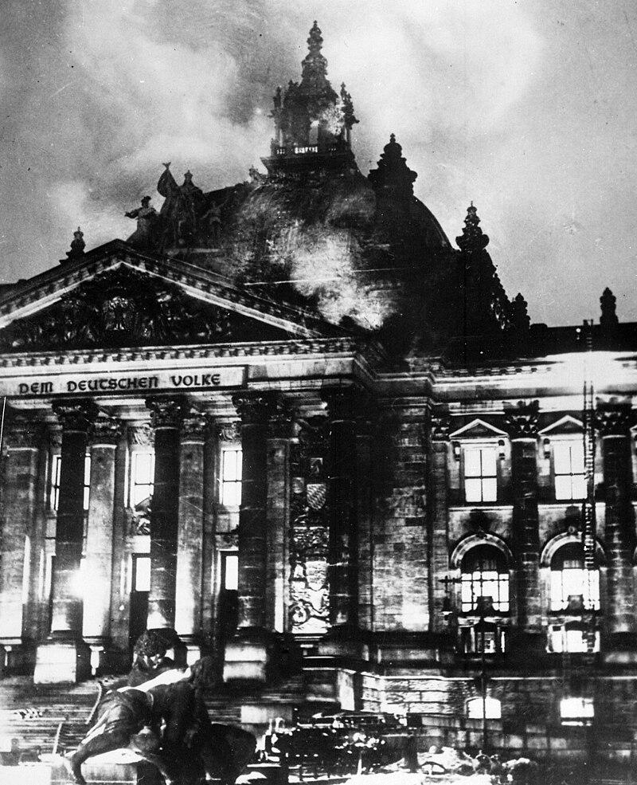
L’incendie du Reichstag (en allemand: Reichstagsbrand) est un incendie criminel qui ravage le palais du Reichstag, siège du Parlement allemand à Berlin, dans la nuit du 27 au 28 février 1933.
Intervenant pendant la campagne électorale pour les élections législatives du 5 mars 1933, il est immédiatement exploité par les nazis à des fins politiques qui l'attribuent à un complot communiste, bien que seul un militant conseilliste néerlandais Marinus van der Lubbe soit arrêté sur place le soir des faits. Il est suivi par la proclamation de la Reichstagsbrandverordnung, qui suspend sine die les libertés civiles et politiques, et par une campagne de répression dirigée contre les communistes allemands et d'autres opposants de gauche.
Lors du procès qui se déroule à Leipzig en septembre 1933, la thèse du complot communiste vole en éclats notamment sous les coups de boutoir de Georgi Dimitrov et des cinq accusés, seul Marinus van der Lubbe est jugé coupable. Il est condamné à mort sur la base d'une loi rétroactive puis exécuté.
Le déroulement des faits et l'identité du ou des incendiaires font encore l'objet de débats politiques et historiographiques. Si la thèse d'un complot communiste n'est plus soutenue par personne depuis le procès de Leipzig, les historiens sont toujours partagés entre les partisans de la thèse d'une opération montée par les nazis pour justifier la mise en place d'un durcissement du régime et ceux qui estiment qu'il s'agit d'un acte individuel immédiatement exploité par les nazis.
Nazification de l’Allemagne
Le 14 juillet 1933, toutes les formations politiques sont interdites au profit du parti nazi, décrété parti unique. Les syndicats sont remplacés par un nouvel organisme corporatiste, le « Front du travail », contrôlé par les nazis. La propagande habile et intensive de Goebbels, nommé le 11 mars 1933 ministre de la Propagande, se met en œuvre. Le 10 mai 1933, des étudiants et bibliothécaires « nettoient » les bibliothèques des villes universitaires, des ouvrages littéraires et des auteurs « indésirables » - libéraux, pacifistes socialistes et juifs. Face à cette menace directe de nombreux écrivains et artistes prennent le chemin de l’exil. La presse, la radio et le cinéma sont strictement surveillés et utilisés par la propagande nazie.
A partir de 1934, les fonctionnaires sont contraints de prêter serment de loyauté à Hitler. La jeunesse fait l’objet d’un soin particulier: sous l’égide de la Ligue nationale socialiste de l’enseignement, l’école devient un lieu d’endoctrinement. Les mouvements de jeunesse, aux premiers rangs desquels figurent les Jeunesses Hitlériennes, enrôlent et mobilisent les jeunes dès l’adolescence, Heinrich Himmler, chef de la SS (groupe de protection) est investi des pleins pouvoirs de police. Prenant de plus en plus d’importance depuis la « Nuit des longs couteaux » (liquidation de la SA par la SS), la SS pénètre tous les secteurs de la vie publique et privée et s’efforce de mettre en place par tous les moyens, y compris la terreur, un modèle d’homme nouveau conforme aux références biologiques nazies.
Les premières mesures contre les Juifs entrent en vigueur deux mois après que le maréchal von Hindenburg eut confié à Adolf Hitler la constitution du gouvernement.
L’exclusion économique
Le 1er avril 1933, un comité officieux organise un immense boycott des commerces, cabinets d’avocats et de médecins juifs. Cette campagne est présentée comme une réponse aux réactions de protestation survenues à l’étranger « à l’initiative des Juifs » contre la politique du gouvernement allemand. Les SA montent la garde devant les magasins, les cabinets de médecins et d’avocats juifs. Cette journée marque symboliquement le début de l’éviction des Juifs de la vie économique. Le 7 avril 1933, deux premières lois excluent les Juifs de la fonction publique et du barreau. Les Juifs d’Allemagne sont progressivement chassés des professions libérales, de l’armée, de la justice, des métiers de la culture et de la presse. Un numerus clausus est instauré dans les universités et à partir de 1938 les enfants juifs doivent quitter l’école.
Le parti nazi et ses militants s’investissent dans l’aryanisation de biens appartenant à des Juifs en intimidant la population juive: 41 000 des 50 000 commerces de détail sont volontairement vendus par leurs propriétaires juifs entre 1933 et 1938.
Les lois de Nuremberg
Le 15 septembre 1935, la loi civile du Reich et la loi « pour la protection du sang et de l’honneur allemand » interdisent les unions et les relations sexuelles entre Juifs et « non-Juifs », « génératrices de souillures ». Les Juifs sont privés de leur citoyenneté et deviennent des sujets de statut inférieur, auxquels il est même interdit de « pavoiser aux couleurs nationales allemandes. » Parallèlement, le décret d’application du 14 novembre 1935 définit qui est juif: « est juif celui qui est issu d’au moins trois grands-parents juifs; est juif celui qui appartient à la communauté religieuse juive ». Le critère racial et l’appartenance religieuse sont donc l’un et l’autre pris en compte. Des ordonnances d’application, des dispositions relatives au cas des Mischlinge (métis) ou demi-Juifs, suivent quelques semaines plus tard. Ces lois déclenchent une série de dénonciations: dans la seule ville de Hambourg, environ 5 000 personnes sont arrêtées puis interrogées tandis que 1 150 procédures d’instruction sont ouvertes. Après avoir purgé une peine pour infraction à la loi sur la protection du sang, ces personnes sont généralement internées dans des camps de concentration.
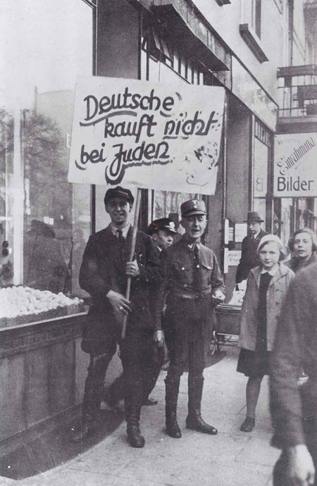
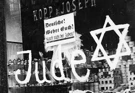
Peu de temps après l'arrivée au pouvoir du NSDAP, en 1933, le chancelier Adolf Hitler lance une « action contre l'esprit non allemand », dans le cadre de laquelle se développent des persécutions organisées et systématiques visant les écrivains juifs, marxistes ou pacifistes. Il s'agit en fait d'une initiative organisée et mise en œuvre par des étudiants allemands sous la direction de la NSDStB, association allemande des étudiants nationaux socialistes.
Le 10 mai 1933, le mouvement atteint son point culminant, au cours d'une cérémonie savamment mise en scène devant l'opéra de Berlin et dans 21 autres villes allemandes: des dizaines de milliers de livres sont publiquement jetés au bûcher par des étudiants, des enseignants et des membres des instances du parti nazi. Ils constituent les autodafés allemands de 1933.
Sous la république de Weimar, les universités allemandes témoignaient déjà clairement d'un esprit réactionnaire, chauviniste et nationaliste. La corporation des étudiants Allemands (DSt) était passée dès l'été 1931 sous la direction d'un représentant de l'association des étudiants allemands nationaux-socialistes (NSDStB) qui avait été élu avec 44,4 % des voix. Après l'accession des nazis au pouvoir, la corporation des étudiants allemands se retrouva en concurrence avec celle des étudiants nationaux-socialistes. Afin de renforcer la corporation des étudiants allemands, trois mois après l'accession d'Hitler et dans la foulée de la création du ministère du Reich à l'Éducation du peuple et à la Propagande, le pouvoir dota ses instances dirigeantes de leurs propres organes de presse et de propagande.
Au début du mois d'avril 1933, la fédération étudiante d'Allemagne demanda à ses membres de participer, sous la houlette de Hans Karl Leistritz, à une action qui devait se dérouler sur quatre semaines, entre le 12 avril et le 10 mai, avec pour thème la lutte contre l'esprit non allemand. L'action faisait référence à un autodafé de livres qui s'était déroulé au cours de la première fête de la Wartbourg en 1817, et se présentait comme une « action commune menée contre le négativisme juif ».
« L'esprit juif, tel qu'il se manifeste dans toute son absence de retenue dans l'agitation de la scène internationale, et tel qu'il a déjà laissé ses marques dans la littérature allemande, doit en être extirpé[. »
Dans le domaine de la politique académique, l'« action contre l'esprit non allemand » constituait le départ d'une conquête des universités par les corporations étudiantes qui se présentaient comme des « sections d'assaut intellectuelles ».
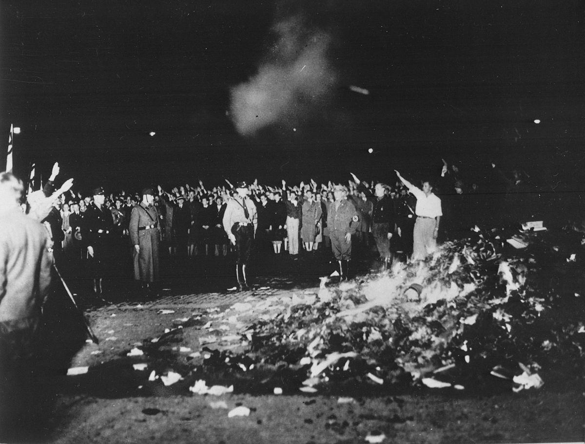
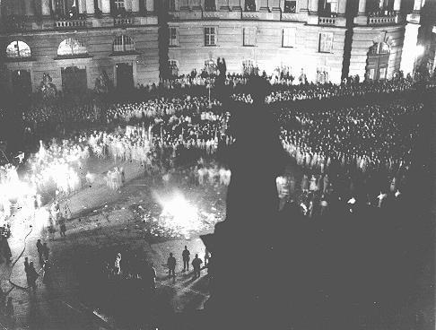
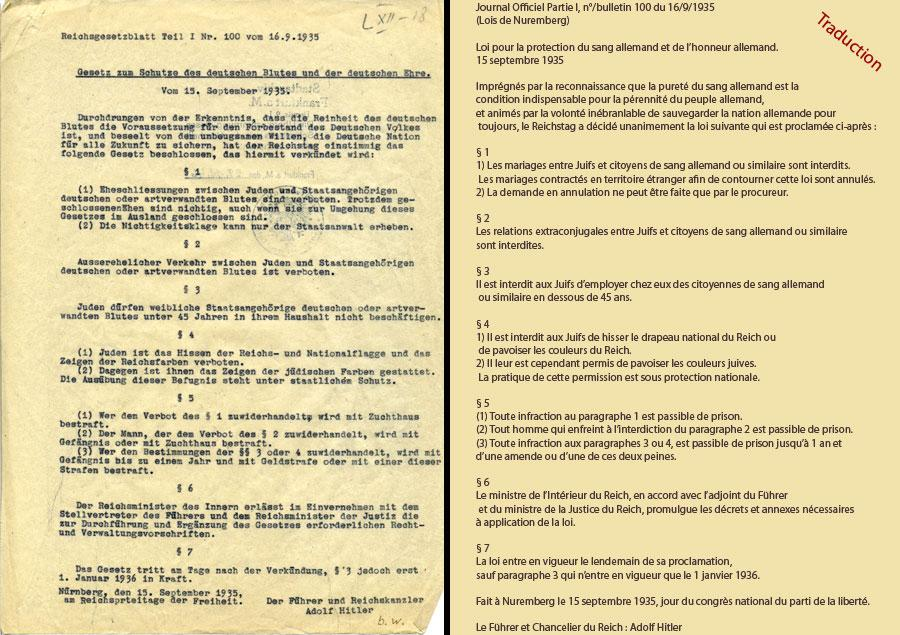
Isolés par les lois antisémites, chassés de tous les secteurs de la vie économique, nombre de Juifs connaissent la misère. Sur les 150 000 Juifs résidant à Berlin en 1937, 60 000 vivent des subsides des organisations philanthropiques. La communauté juive met en place un programme de reconversion professionnelle vers les métiers agricoles et artisanaux.
Ceux qui suivent ces formations voient augmenter leur chance d’obtenir un visa d’émigration. Ces structures sont cependant progressivement interdites à partir de 1938. La communauté juive crée un comité central d’assistance afin de subvenir aux besoins des nécessiteux et de prendre en charge les soins médicaux, les maisons de retraite et les orphelinats.
Paradoxalement, cette exclusion imposée par les nazis provoque un renouveau de la vie juive.
Un renouveau de la vie juive
La jeunesse se tourne vers le sionisme et se met à apprendre l’hébreu, s’apprêtant à partir pour la Palestine. En raison des lois antisémites, les écoliers exclus rejoignent les écoles juives et les associations sportives de la communauté. Les synagogues connaissent un regain de fréquentation, tout comme les activités culturelles et politiques.
L’émigration
Dès 1933, avec l’arrivée au pouvoir des nazis, 37 000 Juifs quittent l’Allemagne; puis l’émigration se stabilise à un rythme de 25 000 Juifs par an jusqu’en 1938. Près de la moitié des émigrants se fixe en Europe occidentale, un quart en Palestine et 27 000 aux Etats-Unis.
L’aggravation de la législation sur le transfert de fonds à l’étranger, le blocage des fortunes, placées sous le contrôle des ministères de l’Economie et des Finances et l’augmentation constante des taxes d’émigration contribuent à dissuader la majorité des candidats au départ.
Entre 1933 et 1938, les gouvernements occidentaux cherchent à s’accommoder de Hitler, préférant l’apaisement à l’affrontement, tandis que certains voient en lui une force solide capable de combattre le communisme. Dans ce contexte, les persécutions à l’encontre des Juifs entrent peu en ligne de compte. Alors que les Juifs commencent à quitter l’Allemagne, les Etats-Unis et le Royaume-Uni exercent un contrôle strict de l’immigration
L’Agence Juive (exécutif du mouvement sioniste) négocie et signe en août 1933, un accord avec les nazis, au terme duquel un certain pourcentage des biens des Juifs allemands est débloqué sous forme de marchandises allemandes exportées vers la Palestine. Cet accord, contesté au sein même du mouvement sioniste, permet, cependant, à 60 000 Juifs d’émigrer en Palestine.
Le 13 mars 1938, avec l’Anschluss, l’Autriche, rebaptisée Ostmark, est placée sous l’autorité du Gauleiter Josef Bürckel, doté du titre de Commissaire au rattachement de l’Autriche au Reich. 190 000 Juifs résident alors en Autriche où les persécutions à leur égard, en particulier à Vienne, deviennent alors plus importantes qu’en Allemagne: humiliations publiques, expropriations mieux organisées, émigration forcée plus rapide.
Avant même l’entrée de la Wehrmacht sur le territoire et malgré les efforts des autorités pour la modérer, la violence se déchaîne: les rues sont le théâtre de scènes de violences et de brimades, des appartements et des commerces appartenant à des Juifs sont pillés. Les violences cessent le 29 avril, quand Bürckel menace de sanctionner les coupables.
Quelques jours après l’Anschluss, Himmler visite les carrières de Mauthausen, à 24 km de Linz et 145 km de Vienne. Les 300 premiers détenus, des prisonniers de droit commun autrichiens et allemands de Dachau, arrivent à Mauthausen le 8 août 1938.
L’accélération des persécutions
Après l’Anschluss en mars 1938, les mesures antijuives sont promulguées à une cadence redoublée. Le premier pas important dans ce processus est la loi du 28 mars abolissant le statut légal des communautés juives accordé au XIXe siècle. Parallèlement, les mesures d’aryanisation s’intensifient. La loi du 26 mars 1938 oblige tous les Juifs du Reich à déclarer la totalité de leur fortune aux autorités, sous peine de poursuites pénales. Au terme de l’article 7 de ce décret, Goering, responsable du Plan quadriennal, peut disposer des biens déclarés « conformément aux besoins de l’économie allemande ». D’avril à novembre 1938, les services du Reich prélèvent ainsi deux des sept milliards de marks de « biens juifs » déclarés.
Les boutiquiers et les artisans reçoivent l’ordre de cesser toute activité commerciale avant le 1er janvier 1939. Enfin les exemptions en faveur des avocats et des anciens combattants juifs sont supprimées. En juillet 1938, les médecins juifs doivent demander des autorisations d’exercer et limiter leur pratique à une clientèle exclusivement juive. L’idée du marquage progresse avec l’obligation de porter sur les passeports, les prénoms Sara et Israël (18 août 1938).
Début octobre 1938, la lettre « J » est apposée sur les pièces d'identité à l’instigation de la Suisse. Une série de rafles a lieu à Berlin durant l’été alors que les contrôles policiers se font plus fréquents. 1 500 Juifs sont internés dans des camps de concentration.
Des destructions de biens, des expulsions de certains villages et la profanation de lieux de cultes ont également lieu. Les synagogues de Munich (9 juin), Nuremberg (10 août) et Dortmund (septembre) sont dynamitées.
Le sort des Juifs autrichiens
Le 20 août 1938, le Bureau central d’émigration juive est mis en place sous la responsabilité de Stahlecker, contrôlé en réalité par Eichmann lui-même. Il entreprend d’abord de refouler les Juifs par-delà les frontières en particulier en Tchécoslovaquie, en Hongrie et en Suisse. Selon des sources allemandes, environ 5 000 Juifs autrichiens sont chassés entre mars et novembre 1938.
En octobre 1938, Himmler ordonne de regrouper à Vienne tous les Juifs des provinces autrichiennes. Durant l’été 1938, les Juifs autrichiens tentent de se réfugier illégalement dans les pays voisins et jusqu’au Royaume Uni. La Gestapo envoie plusieurs groupes de Juifs en Finlande, en Lituanie et aux Pays Bas d’où ils sont refoulés.
Les protestations des pays étrangers se multiplient et l’entrée illégale ou l’expulsion vers l’Ouest deviennent plus difficiles. Moins de 6 mois après l’Anschluss, 45 000 Juifs autrichiens ont émigré. En mai 1939, plus de 100 000 Juifs, partent à leur tour, soit près de 50 % des Juifs autrichiens.
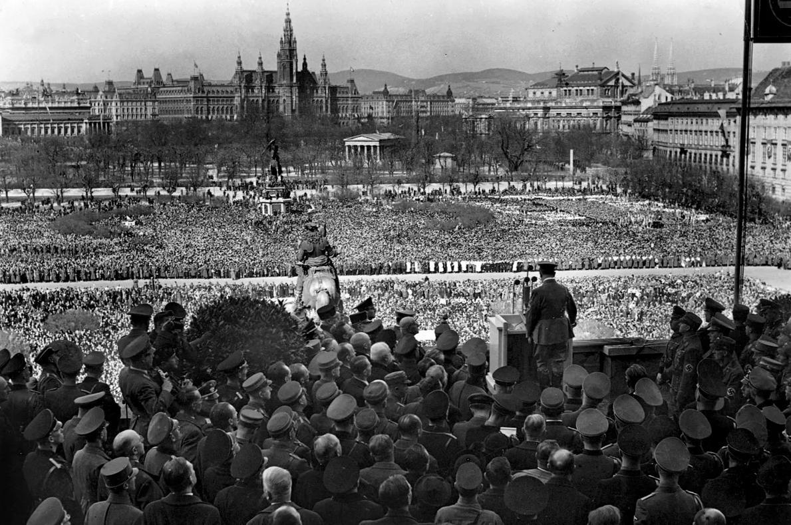
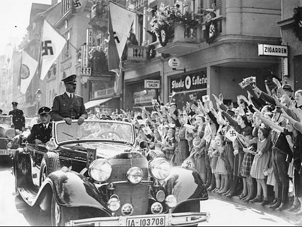
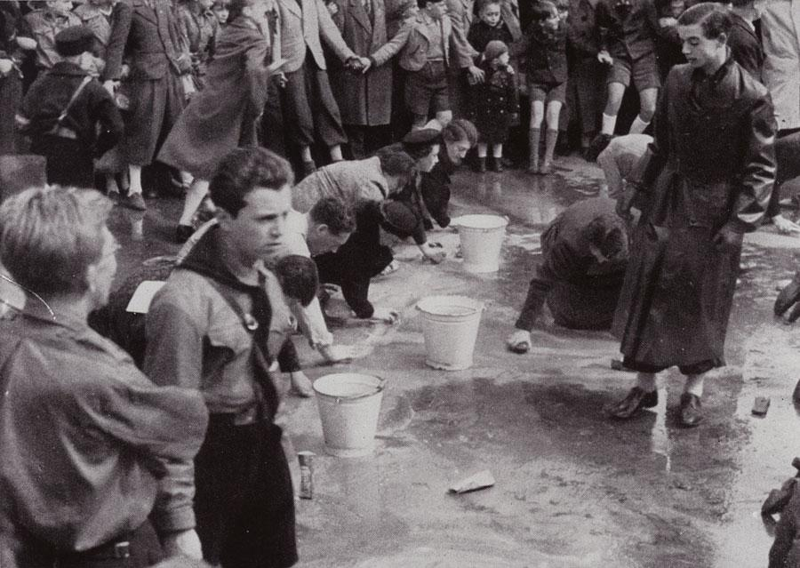
Scène d'humiliation à Vienne où des Juifs sont forcés de nettoyer le sol d'une rue. Vienne, Autriche, après mars 1938.
Crédit photographique: Mémorial de la Shoah
La conférence d’Evian
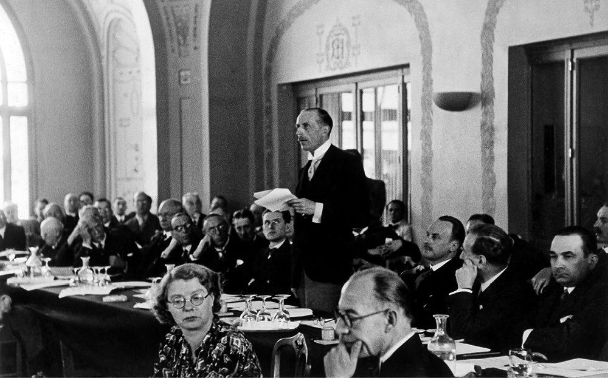
Le 23 mars 1938, Franklin Delano Roosevelt, président des Etats-Unis, prend l’initiative de convoquer une conférence internationale sur la question des réfugiés en provenance du Reich. Avant la conférence, Roosevelt prend ses précautions à l’égard des 32 Etats convoqués affirmant qu’il ne s’agit pas d’augmenter les quotas d’immigration ou de financer l’accueil des réfugiés. L’Allemagne n’est pas invitée, la présence du Portugal n’est pas jugée utile. L’URSS et la Tchécoslovaquie ne dépêchent pas de représentants, l’Italie, solidaire de l’Allemagne, refuse l’invitation. La Hongrie, la Roumanie, la Pologne et l’Afrique du Sud envoient des observateurs. Le Royaume-Uni accepte l’invitation non sans s’être assuré auparavant que les Etats-Unis ne tenteraient pas d’obtenir de sa part une augmentation des immigrants juifs dans les territoires sous mandat britannique.
Les représentants des 32 États qui siègent finalement du 6 au 15 juillet à l’hôtel Royal à Evian (France) expriment leur sympathie aux victimes des persécutions tout en affirmant que la situation économique et sociale de leur pays ne leur permet pas d’accroître les contingents d’immigration. Une sous-commission auditionne en une après-midi, les représentants de quarante organisations de réfugiés et les organisations juives, dont celles du Reich. La conférence n’aboutit à aucun résultat concret, sinon à créer un Comité Intergouvernemental pour les réfugiés siégeant à Londres et destiné à donner une suite à cette rencontre.
Les Juifs allemands et autrichiens voient tous leurs espoirs s’effondrer. Les dirigeants nazis, assurés que les gouvernements occidentaux ne viendront pas faire obstacle à leur politique, intensifient les mesures forçant les Juifs à émigrer. Mais l’absence de pays d’accueil empêche ces derniers de quitter l’Allemagne.
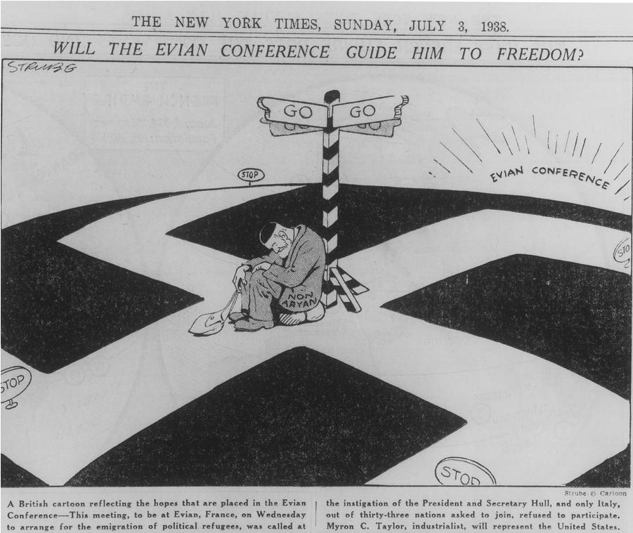
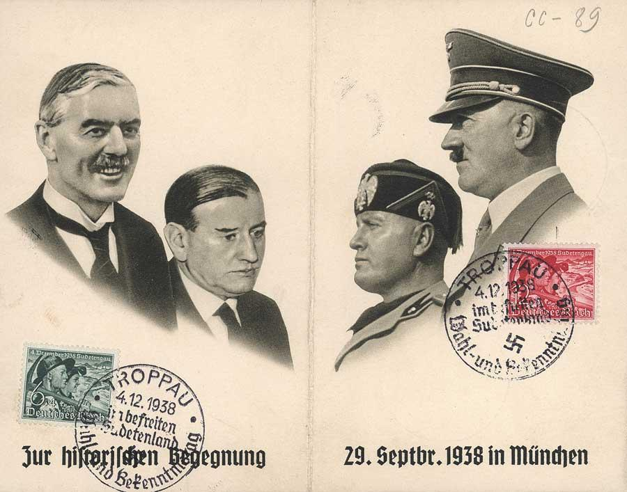
Carte postale commémorant les accords de Munich signés dans la nuit du 29 au 30 septembre 1938 par Arthur Neville
Chamberlain, Édouard Daladier, Benito Mussolini et Adolf Hitler. Allemagne, 1938.
Crédit photographique: Mémorial de la Shoah
Signés dans la nuit du 29 au 30 septembre 1938 par l’Allemagne, la France, Le Royaume-Uni et l’Italie, ces accords conviennent des dispositions et conditions réglementant la cession des territoires des Sudètes où résident des populations allemandes, à l’Allemagne.
L’expulsion des Juifs des Sudètes
Moins d’un mois après la signature des Accords de Munich en septembre 1938, Hitler expulse vers la Tchécoslovaquie plusieurs milliers de Juifs qui vivent dans la région des Sudètes. Les Tchécoslovaques refusant de les laisser entrer, ceux-ci tentent de se réfugier en Hongrie. Mais ils sont renvoyés en Allemagne par les autorités hongroises puis à nouveau dirigés vers la Tchécoslovaquie par les autorités nazies. Ils sont finalement conduits de force vers des camps de toile improvisés installés dans un no man’s land séparant la Hongrie et la Tchécoslovaquie, comme à Mischdorf, à une vingtaine de kilomètres de Bratislava.
L’expulsion des Juifs polonais
Le 31 mars 1938, le Parlement polonais vote une loi définissant toute une série de cas dans lesquels un ressortissant polonais vivant à l’étranger peut être privé de sa nationalité. En octobre 1938, un nouveau décret annonce l’annulation des passeports des Polonais résidant à l’étranger qui n’auront pas obtenu une autorisation spéciale d’entrer en Pologne avant la fin du mois. Or, plus de 40 % des Juifs vivant dans le Reich sont nés en Pologne.
Le 27 et 28 octobre 1938, la police et les SS arrêtent et regroupent tous les Juifs polonais de sexe masculin, les transportent aux environs de Zbaszyn, ville polonaise, où ils leur font franchir la rivière qui sépare les deux pays. Les femmes et les enfants privés de tout moyen de subsistance sont obligés de suivre les hommes. La majorité d’entre eux arrive en train, munie seulement de quelques affaires et d’une somme d’argent limitée à 10 marks par personnes. Les Grynszpan, une famille juive originaire de Hanovre fait partie des 16 000 juifs polonais reconduits à la frontière, leur fils Herschel se trouve à Paris dans la clandestinité. Dès leur arrivée en Pologne, conformément aux instructions reçues les gardes-frontières polonais les refoulent.
La « Nuit de Cristal » (9-10 novembre 1938)
Après cinq années de National-socialisme, les chefs du régime constatent que, malgré les menaces et les brimades, les trois-quarts de la population juive du Reich ont choisi de rester. Situation d’autant plus préoccupante que presque 200 000 Juifs résidants en Autriche tombent sous l’autorité du Reich après l’Anschluss. 1938 sera l’année d’une radicalisation et d’une accélération des mesures antisémites visant à éliminer toute présence juive, en particulier dans l’économie, et à encourager une émigration massive.
Ces mesures législatives s’accompagnent d’actes de violence dont le point culminant sera la « Nuit de Cristal ».
L ’assassinat de Ernst von Rath par Herschel Grynszpan
Le 7 novembre 1938, Herschel Grynszpan, Juif polonais d'origine allemande qui habite Paris et veut protester contre la récente expulsion des Juifs polonais vivant en Allemagne par-delà la frontière polonaise, se présente à l’ambassade d’Allemagne et blesse mortellement Ernst von Rath, secrétaire d’ambassade.
En France, Grynszpan est inculpé par le juge Tesnière de tentative d’assassinat et de meurtre avec préméditation. Transféré à Berlin, Grynszpan est interrogé puis incarcéré à Sachsenhausen, le 18 janvier 1941 et fait plusieurs séjours à la prison de la Gestapo. Personne n’a jamais su avec certitude ce qu’il advint de Grynszpan. Si, en février 1936, le meurtre de Wilhelm Gustloff, chef d’une branche suisse du parti nazi, par David Frankfurter, étudiant juif d’origine yougoslave était passé inaperçu en raison des Jeux olympiques de Berlin celui de von Rath est, pour les nazis, le prétexte au déclenchement de la « Nuit de Cristal ».
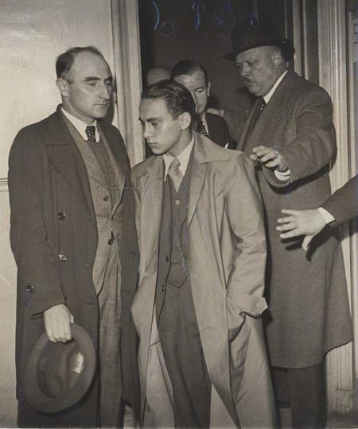
Les pogroms antijuifs
A l’annonce de l’attentat contre von Rath, la presse allemande développe à l’envi le thème de la conspiration juive mondiale et menace de sévères représailles. C’est le prétexte idéal pour faire la chasse aux Juifs et les contraindre à quitter massivement l’Allemagne.
Le 9 novembre au soir à Munich, Goebbels prononce un discours violent d’incitation aux représailles devant les chefs nazis réunis à l’ancien Hôtel de Ville de Munich pour la commémoration du putsch de 1923 et annonce que des pogroms antijuifs ont éclaté dans les districts de Kurhessen (Hesse-Cassel) et de Magdeburg-Anhalt. Il ajoute que, sur sa suggestion, Hitler a décidé de ne rien faire pour empêcher un mouvement qui s’étendrait spontanément à l’ensemble du Reich.
A l’annonce du décès de von Rath l’émeute se propage avec une rapidité foudroyante. La SA donne ordre à ses troupes d’incendier systématiquement toutes les synagogues du pays. Informé des événements dans la nuit, Himmler a une réaction relativement modérée, ordonnant à ses troupes d’entrer en action pour empêcher un pillage généralisé et pour interner une vingtaine de milliers de Juifs dans les camps de concentration. Les agresseurs se ruent à l’assaut des symboles de la vie juive.
Près d’une centaine de Juifs sont assassinés, plusieurs sont gravement blessés, des femmes sont violées. En Autriche le pogrom est plus violent encore: 42 synagogues sont détruites, 27 Juifs tués, une centaine est gravement blessée. 6 500 personnes sont arrêtées et transférées principalement aux camps de concentration de Dachau et Buchenwald.
La grande majorité des internés Juifs allemands et Juifs autrichiens, lors de la « Nuit de Cristal », est progressivement libérée entre le 18 novembre 1938 et le printemps 1939 s’ils s’engagent à émigrer sans tarder et à abandonner la majeure partie de leurs biens. Parmi eux, les vieillards, les grands malades, ceux qui peuvent prouver qu’ils vont émigrer ou accepter de céder leurs entreprises à un Aryen pour un prix dérisoire, sont les premiers libérés. Le froid, les mauvais traitements et les maladies provoquent la mort de plusieurs centaines « de Juifs de novembre ». La communauté juive est condamnée à payer une amende d’un milliard de marks pour avoir causé ces dommages « en provoquant la juste colère du peuple allemand ». Elle sera prélevée sur les 7 milliards d’avoirs juifs bloqués depuis avril 1938.
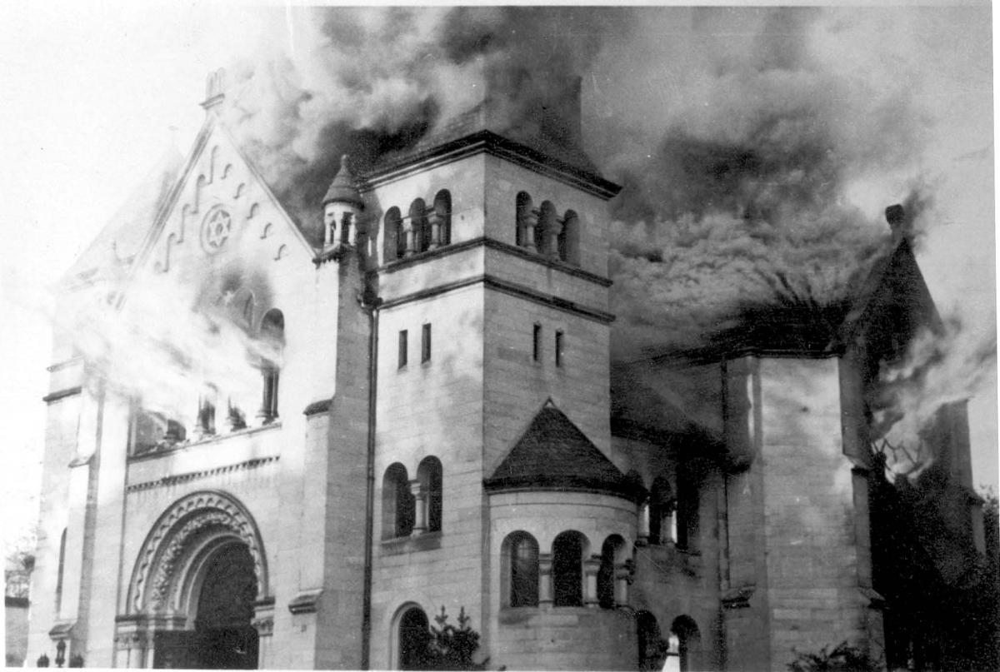
Le déchaînement de violence donne à tort l’impression d’une émeute spontanée. En fait, à l’exception d’une minorité, la population est restée spectatrice. Peu de voix s’élèvent pour protester officiellement. Les Eglises restent silencieuses.
Dans la journée du 10, les violences cessent. Le bilan est très lourd: destruction de 267 synagogues en Allemagne, de nombreuses maisons communautaires, de milliers de lieux privés (maisons, appartements et commerces). A ces destructions matérielles s’est ajouté l’assassinat de 91 Juifs, l’arrestation et la déportation de 30 000 hommes à Dachau et Buchenwald. Dans les semaines qui suivent, la communauté juive est secouée par une vague de suicides sans précédents (680 dans la seule ville de Vienne), et la vague d’émigration vers l’Europe occidentale et la Palestine s’accélère.
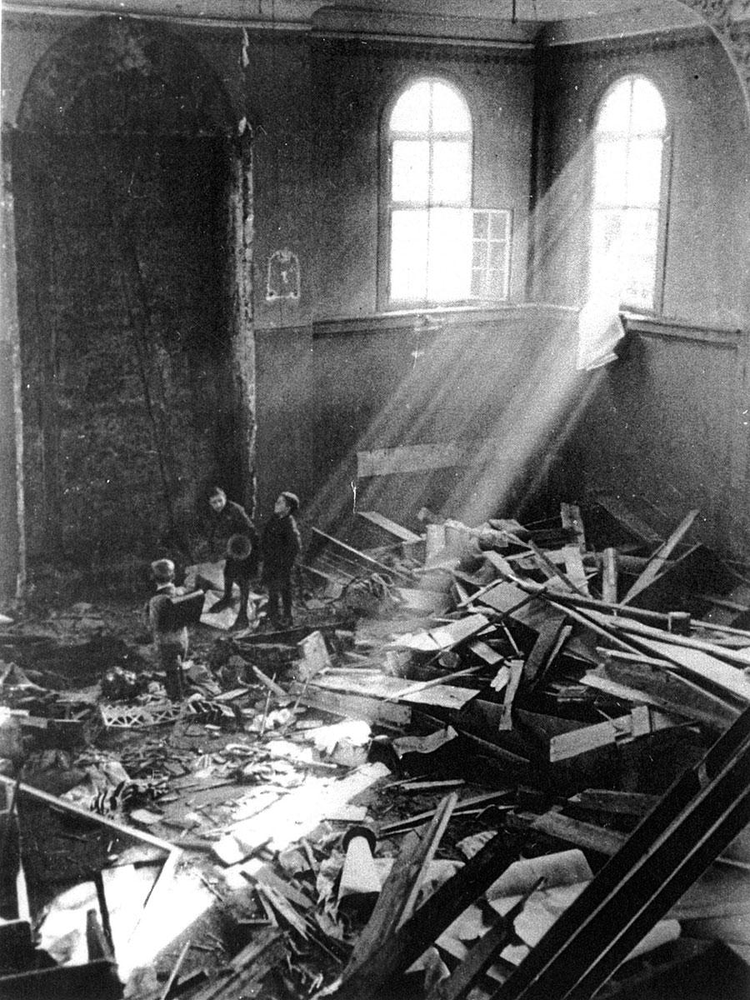
Conscient du retentissement à l’échelle nationale et internationale de cet évènement (condamnation de l’opinion publique et politique au Royaume Uni et aux Etats-Unis, boycott des entreprises en France, Canada, Pays-Bas), le régime nazi décide de ne pas renouveler d’actions similaires au grand jour.
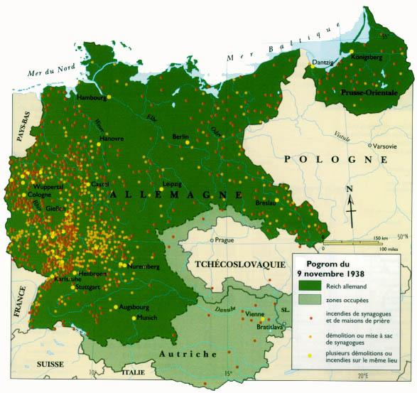
Les arrestations
La Nuit de Cristal est aussi la première vague d’arrestations. 20.000 à 30.000 Juifs sont arrêtés et déportés dans les camps de concentration existants (Dachau, Sachsenhausen…). 91 personnes trouvent la mort au cours de la nuit de violences. En Autriche, la Nuit de Cristal est particulièrement violente. 6500 Juifs sont arrêtés par la Gestapo et 3000 déportés à Dachau.
Le bilan
7000 magasins furent détruits, toutes les synagogues mais aussi des locaux communautaires, des cimetières juifs, des maisons d’habitation furent saccagés.
Hitler et Goering profitent de l’occasion pour lancer une nouvelle série de mesures antijuives. Tout d’abord, une amende d’un milliard de marks est imposée aux Juifs « pour payer les dégâts »!
Ensuite, commence un vaste plan d’aryanisation de toutes les entreprises appartenant à des Juifs en Allemagne. Le 12 novembre 1938, tous les commerces de détail reçurent l’ordre de fermer avant le 31 décembre.
Puis le 23 novembre, une circulaire signée Brinkmann, secrétaire d’Etat à l’Economie, ordonne la liquidation de tous le commerce de détail juif: les entreprises sont dissoutes, leurs stocks doivent être remis au groupement professionnel de leur branche d’activité. Les artisans sont rayés des registres professionnels et n’ont plus le droit d’exercer.
Le 3 décembre 1938, Funk et Frick étendent par décret l’aryanisation aux entreprises industrielles et aux possessions immobilières. Les Juifs sont alors totalement dépossédés.
Certains Juifs peuvent encore fuir l’Allemagne. Le but avoué des nazis est de vider l’Allemagne de ses Juifs.
1938: « L'année fatidique »
Les évènements de 1938, qu'un document allemand qualifie « d'année fatidique », participent de la radicalisation progressive de la politique juive des nazis. Au cours de l'année 1938, la volonté expansionniste allemande s'intensifie et les préparatifs en vue de la guerre s'accélèrent.
La répression des Juifs, considérée comme partie intégrante d'une trajectoire politique et idéologique globale, devient de plus en plus féroce. Tout au long de l'année, l'enregistrement et l'expropriation forcée des biens juifs s'intensifient. Le ministre nazi de l'Économie, Walter Funk, se targue du fait que les autorités ont déjà réussi à mettre la main sur des biens juifs d'une valeur totale de deux millions de marks en 1938.
Le 5 octobre, les passeports des Juifs sont invalidés et ceux qui ont besoin d'un passeport pour émigrer en obtiennent un marqué de la lettre J (Jude, Juif). Une autre loi adoptée en 1938 exige des Juifs qui ne portent pas un « nom typiquement juif » d'en ajouter un. A leurs prénoms, les hommes sont contraints d'ajouter Israël et les femmes Sarah, afin d'être facilement identifiables en tant que Juifs.
Le 27 octobre 1938, les Juifs ayant la citoyenneté polonaise sont brutalement expulsés d'Allemagne. C'est la première déportation massive de Juifs. Des SS conduisent enfants, vieillards et malades de l'autre côté de la frontière polonaise; la plupart d'entre eux sont entassés dans des étables abandonnées près de la ville frontière de Zbaszyn en Pologne. La déportation à Zbaszyn est directement liée au pogrom de la Nuit de cristal (Kristallnacht) – un évènement anti-juif déterminant qui a lieu les 9 et 10 novembre 1938.
La propagande nazie affirme qu'il s'agit d'une éruption de violence spontanée mais elle a en réalité été planifiée et commanditée au plus haut niveau de la hiérarchie nazie. Le signal a été donné par Joseph Goebbels, ministre de la Propagande et le pogrom exécuté par les membres du régime nazi. 91 Juifs sont assassinés, plus de 1400 synagogues sont incendiées dans toute l'Allemagne et des boutiques et des entreprises appartenant à des Juifs sont pillées et saccagées. Les Juifs sont en outre condamnés à verser une « réparation » pour les dommages causés et près de 30 000 Juifs sont arrêtés et envoyés dans des camps de concentration.
Des réfugiés pris au piège
La « Nuit de Cristal » suscite l’indignation et de vives protestations dans un grand nombre de pays occidentaux, sans pour autant provoquer de modifications de la politique d’immigration de ces Etats.
« Le monde semble être divisé en deux parties: les endroits où les Juifs ne peuvent pas vivre et ceux où ils ne peuvent pas entrer » déclare déjà en 1936, Haim Weizmann, chef de file du mouvement sioniste. En 1938, les frontières se ferment encore un peu plus.
En France
Si les critiques de la « Nuit de Cristal » sont vives dans la presse, le gouvernement Daladier reste muet afin de ne pas compromettre le rapprochement en cours avec l’Allemagne nazie (les accords Ribbentrop-Bonnet). De 1933 à 1937, la France a accueilli plusieurs dizaines de milliers de réfugiés provenant essentiellement d’Allemagne et d’Autriche.
Cependant, le gouvernement du Front populaire crée un sous-secrétariat d’état à l’immigration en 1937 et le droit d’asile est restreint en 1938. En février 1939, le pays est submergé par l’arrivée de 500 000 réfugiés espagnols.
En Allemagne
La terreur vécue pendant la « Nuit de Cristal », les arrestations massives et la vague de nouvelles lois, transforment le flot migratoire en exode massif.
Le 24 janvier 1939, Goering charge Wilhelm Frick, ministre de l’intérieur, de « réaliser par tous les moyens l’émigration des Juifs hors d’Allemagne ».
Ce même mois de janvier, l’Office central pour l’émigration juive est fondé à Berlin sous la direction de Reinhard Heydrich.
Sur le plan intérieur, Goering prend la relève de Goebbels pour l'organisation des suites du pogrom. La réunion des principaux responsables nazis du 12 novembre 1938, décide de la multiplication des mesures antijuives: dissolution des organisations juives (à l'exception du Reichsvertretung, organe représentatif des Juifs d'Allemagne, du Kulturbund, organisation culturelle et de l'office palestinien de l'organisation sioniste), suppression de la presse juive, restriction des déplacements des Juifs dans les lieux publics, expulsion des Juifs de leurs logements et concentration dans des « maisons juives ».
La Palestine fermée par le « Livre Blanc »
En mai 1939, le Royaume-Uni décide de limiter strictement l’immigration en Palestine en annonçant la mise en place d’un « Livre Blanc » réduisant l’accueil des réfugiés à 75 000 Juifs pour 5 ans.
Soucieux de préserver leurs intérêts dans la région, les Anglais préférèrent maintenir le statu quo. Les forces navales britanniques n’hésitent pas à intercepter et à renvoyer à leurs ports de départ, généralement Constanza en Roumanie, les bateaux chargés de Juifs pour lesquels la Palestine est le dernier espoir: le 25 mars 1939, le Sandru avec 269 réfugiés, le 6 avril 1939 l’Astir avec 698 réfugiés, le 23 avril 1939 l’Assimi avec 250 réfugiés.
Le Livre Blanc (ratifié le 23 mai 1939)
Depuis le traité de San Remo (1920), l’Empire ottoman est disloqué et la Palestine est gérée par les Britanniques, auxquels la SDN (Société des Nations) certifie le mandat en 1922.
A la suite des différentes tensions judéo-arabes, qui se traduisent par des manifestations, des protestations, mais aussi des émeutes meurtrières qui éclatent dès le début des années 20, les autorités britanniques font les frais d’une politique ambigüe et reviennent sur les engagements pris lors de la déclaration Balfour en 1917. Alors que la guerre paraît inévitable, la puissance mandataire britannique ne veut pas courir le risque de voir les populations arabes se tourner vers le Reich nazi.
Le Livre blanc de Malcolm Mac Donald, officiellement la Déclaration de politique générale sur la Palestine de 1939 (en anglais: White Paper of 1939 ou Palestine Statement of Policy, ou MacDonald White Paper) est un document de politique générale publié par le gouvernement du Royaume-Uni, dirigé par Neville Chamberlain, à la suite de la grande révolte arabe de 1936-1939 en Palestine mandataire. Après une difficile approbation à la Chambre des communes, le 23 mai 1939, il sert de politique directrice pour la Palestine mandataire de 1939 jusqu'au départ des Britanniques en 1948.
Par le Livre blanc, les autorités britanniques décident de mettre fin à la politique de partition de la Palestine en deux Etats distincts et d’aller vers un Etat arabe unitaire au terme du délai de 5 ans.
Avec la menace qui pèse sur les Juifs d’Europe, l’intensification de l’immigration est une priorité pour le mouvement sioniste. Des réfugiés s’entassent sur des bateaux affrétés par la Haganah (l’organisme de défense armée des Juifs de Palestine) et tentent de rejoindre clandestinement la Palestine.
Les forces navales britanniques n’hésitent pas à intercepter et à renvoyer vers leurs ports de départ, généralement Constanza en Roumanie les bateaux chargés de Juifs pour lesquels la Palestine est le dernier espoir: le 25 mars 1939, le Sandru avec à son bord 269 réfugiés, le 6 avril l’Astir avec 698 réfugiés, le 23 avril l’Assimi avec 250 réfugiés.
De nombreux immigrants sont également internés au camp d’Atlit situé à côté de Haïfa dans le nord d’Israël ou transférés à l’Ile Maurice.
Principalement, dans le contexte du début de la Shoah, Le Livre blanc de 1939 limite l'immigration juive à 15 000 personnes par an et pendant cinq ans seulement, pour être ensuite déterminée par la majorité arabe (section II). En outre il interdit l'achat de terres par des Juifs sauf sur 5 % du territoire du Mandat (section III).
Le Livre Blanc est rejeté catégoriquement et immédiatement par les Juifs vivant en Palestine. Dès le 18 mai, il avait déclenché une grève générale des Juifs.
Le Livre Blanc est rejeté par les représentants des partis arabes de Palestine, sous l'influence de Mohammed Amin al- Husseini, quoique le Parti de la défense nationale se dit prêt à l'accepter.
Le Livre Blanc est également dénoncé par la Commission des mandats permanents de la Société des Nations.
À la Chambre des communes, Le Livre blanc donne lieu à des débats âpres et n'est accepté que difficilement. Le 22 mai 1939, elle ne rejette une motion disant que le Livre blanc est incompatible avec les termes du mandat que par 268 voix contre 179. Le lendemain, la Chambre des lords accepte la nouvelle politique mais sans vote.
Au cours du débat, David Lloyd George qualifie le Livre blanc « d'acte de perfidie », et Winston Churchill vote contre son parti bien qu'il fasse partie du gouvernement. Le député libéral Jimmy de Rothschild déclare au cours du débat parlementaire que « pour la majorité des Juifs qui vont en Palestine, c'est une question de migration ou d'extinction physique ».
Certains partisans du gouvernement s'opposent à cette politique au motif qu'elle semble, selon eux, contredire la déclaration Balfour. Plusieurs députés du gouvernement votent contre les propositions ou s'abstiennent, y compris des ministres du Cabinet comme l'illustre secrétaire d'État juif à la Guerre Leslie Hore-Belisha.
« Le Livre blanc est dénoncé comme "illégal", car il contredit les termes du mandat, [...] En Grande-Bretagne, bien que les conservateurs disposent d'une majorité confortable au Parlement, le gouvernement est mis sur la défensive: Deux ministres (Leslie Hore-Belisha et Walter Elliot) et 110 députés conservateurs s'abstiennent, et tous les députés travaillistes votent contre. Vingt dissidents conservateurs, dont Churchill…, votent également contre » La Société des Nations La Commission des mandats permanents de la Société des Nations estime à l'unanimité que le Livre blanc est en contradiction avec l'interprétation que le gouvernement mandataire, c'est-à-dire l'Angleterre, avait donnée au mandat dans le passé avec l'accord des organes de la Société des Nations. Quatre des membres estiment que la politique n'est pas en harmonie avec les termes du mandat, et les trois autres estiment que les circonstances existantes justifieraient la politique si le Conseil de la Société des Nations ne s'y opposait pas. Le déclenchement de la Seconde Guerre mondiale suspend toute nouvelle délibération
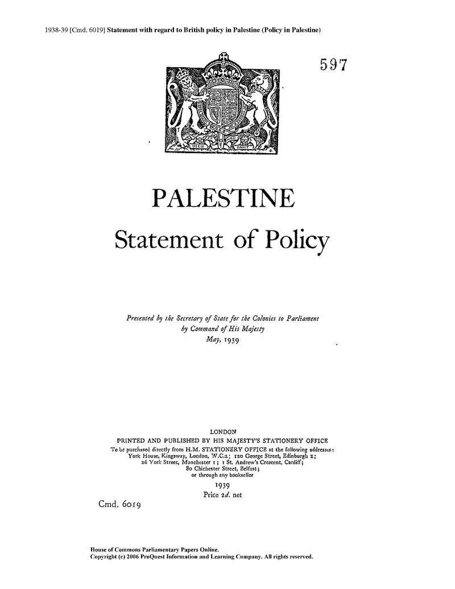
Les mirages coloniaux
Après l’échec de la conférence d’Evian, les pays occidentaux, le Comité d’Evian et les organisations juives tentent entre autres solutions de trouver des zones d’accueil dans leurs territoires coloniaux (le Tanganyika et la Guyane pour les Anglais, Madagascar et la Nouvelle-Calédonie pour les Français). Le Comité d’Evian se tourne également vers les pays sud-américains. Le président Roosevelt intervient auprès de l’Angola portugaise. Alors que des commissions n’en finissent pas d’étudier ces dossiers, le déclenchement de la guerre met fin à toutes ces spéculations.
Shanghai
Jusqu’en octobre 1939, Shanghai est la seule terre d’asile à ne pas restreindre l’immigration. 14 000 réfugiés pour la plupart venus d’Allemagne s’y installent avant la guerre. Leur nombre atteint les 17 000 en 1941 et comprend une large majorité de Juifs.
Aidés par la petite communauté juive de Shanghai et l’American Jewish Joint Distribution Committee, la vie s’organise au sein de cinq camps de réfugiés. Un certain nombre de ces nouveaux arrivants parviennent à créer des entreprises et des commerces d’un style européen. Une vie religieuse, culturelle et politique incluant une presse germanophone, une radio et des productions théâtrales voit rapidement le jour.
En février 1943, l’évolution de la guerre dans le Pacifique bouleverse le sort de ces réfugiés qui sont tous internés au sein d’un ghetto par la puissance d’occupation japonaise. Dès la fin de la guerre, ils sont rapatriés en Europe, tandis qu’un grand nombre d’entre eux décide de s’établir en Palestine.
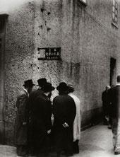
Les enfants de la Guette
Après les violences de la « Nuit de Cristal », un groupe d’enfants – confiés par leur famille à un comité présidé par la baronne Germaine de Rothschild – parvient à quitter l’Allemagne nazie en mars-avril 1939.
Ces cent trente enfants âgés de neuf à quatorze ans, originaires de Vienne, de Berlin et du Palatinat sont hébergés au Château de La Guette à Villeneuve-Saint-Denis, en Seine-et-Marne, propriété des Rothschild.
Avec le début de la guerre, l’équipe d’éducateurs se disloque et les plus âgés parmi les enfants sont répartis dans des internats de la région. La victoire militaire allemande contraint la centaine d’enfants restants au château à se réfugier à La Bourboule, près de Clermont-Ferrand, dans un hôtel loué par les Rothschild. Fin 1941, confrontée à de nombreuses difficultés, l’œuvre de La Guette est dissoute et intégrée à l’OSE (Œuvre de Secours aux Enfants). Germaine et Edouard de Rothschild réussissent à faire émigrer certains enfants aux Etats-Unis.
En 1942, l’OSE tente de répartir les enfants chez des particuliers, dans des écoles catholiques ou professionnelles. Certains sont emmenés en Suisse, par un réseau créé par l’OSE et Georges Garel, mais certains enfants sont refoulés en France par les douaniers suisses alors que les rafles se multiplient en zone sud. Des 130 enfants, 10 ont été arrêtés et déportés de France. Parmi eux, un seul a survécu.
Le Saint-Louis
Le 13 mai 1939, à Hambourg, 937 passagers dont 931 émigrants, s’embarquent pour Cuba à bord du Saint-Louis. La Hamburg-Amerika-Linie, propriétaire du bateau, leur avait procuré des certificats de débarquement qu’elle avait elle-même achetés à des intermédiaires du directeur général des services cubains de l’immigration. À l’aube du 27 mai, le Saint-Louis mouille dans le port de La Havane, mais les passagers se voient interdire le débarquement, leur visa ayant été vendu frauduleusement par le directeur des douanes cubaines. Seuls 29 passagers débarqueront à La Havane.
En dépit des interventions de l’American Jewish Joint Distribution Committee et du chargé d’affaires allemand en poste à Cuba, le bateau est contraint de mettre le cap sur Hambourg, le 2 juin. Le capitaine du Saint-Louis s’attarde cependant au large des côtes de la Floride, espérant pouvoir débarquer 743 passagers, sur les 907 restants à bord, qui avaient déjà effectué des demandes de visas pour les Etats-Unis.
Mais le gouvernement de Washington refuse de les laisser entrer prétextant que chaque candidat se doit d’attendre patiemment son tour. Le bateau est cerné par les vedettes garde-côtes et doit poursuivre sa route.
A la mi-juin le Saint-Louis fait route vers l’Europe et atteint Anvers le 17 juin. L’American Jewish Joint Distribution Committee qui garantit la prise en charge financière des passagers, parvient à faire entrer ces réfugiés dans différents pays, 181 aux Pays-Bas, 214 en Belgique, 224 en France et 288 au Royaume-Uni.
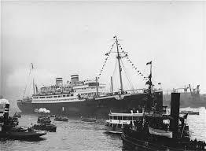
pays y participent dont 20 d’Amérique latine et 9 d’Europe, ainsi que 24 organismes d’assistance dont l’Agence Juive qui est représentée par la future Premier ministre de l’Etat d’Israël, Golda Meyerson (Méïr). Mais personne ne fonde beaucoup d’espoir sur cette réunion qui durera neuf jours. Chaque pays explique son incapacité à accueillir plus de réfugiés, pour des raisons économiques et démographiques. Cordell Hull décrit un problème de grande ampleur qui ne pourra être résolu rapidement. Il annonce solennellement que son pays accueillera 27 000 réfugiés juifs par an, un chiffre dérisoire face aux files de demandeurs d’asile qui espèrent rejoindre l’Amérique. ↩
La Grande-Bretagne refuse d’en accueillir en Palestine alors sous mandat britannique craignant des troubles avec la population musulmane. La France, par la voix d’Henry Bérenger, est sur la même position avec l’Algérie ou d’autres territoires d’outre-mer (Madagascar évoqué en 1936 avec la France par la Pologne pour l’émigration de sa propre population juive avait été définitivement refusé par le ministre Georges Mandel).